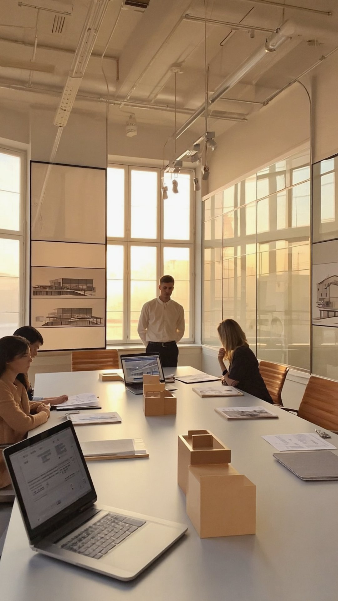
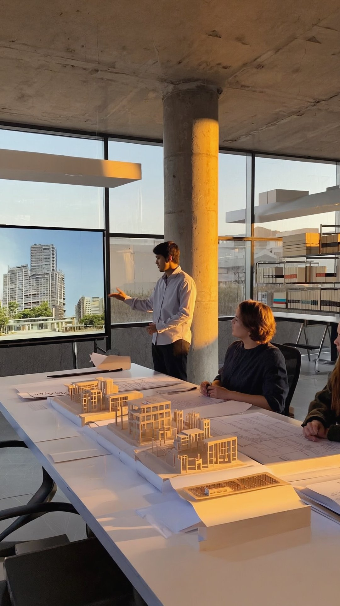
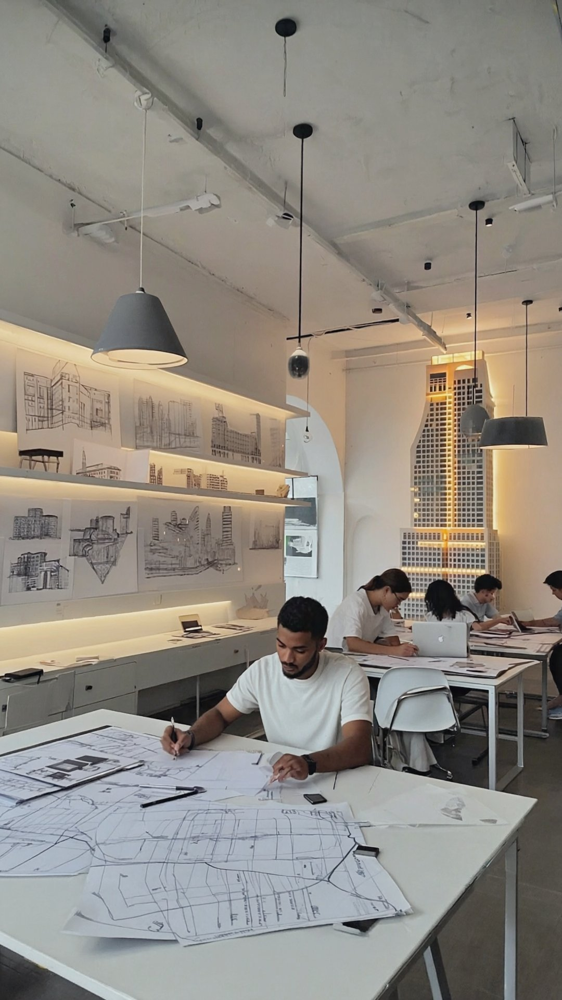

Managed IT Support for Architects & Architecture Firms
What does DTCloudOn do for architecture firms?
DTCloudOn is a managed IT and cybersecurity provider that supports architecture firms and design practices across the United States. We keep CAD and BIM workstations, design software, file servers, and networks running fast and secure, protect confidential client plans, and set up cloud collaboration for project teams. Help desk, monitoring, and security are delivered remotely, and our technicians come on-site in all 50 states for workstation setup, file server and plotter installation, network cabling, Wi-Fi, and conference room systems.
- Who we serve
- Architecture firms, design studios and multi-office practices
- Software we support
- AutoCAD, Revit, Rhino, SketchUp, rendering tools and Microsoft 365
- Core services
- 24/7 help desk, network monitoring, cybersecurity, cloud and backup
- Service area
- All 50 states, with remote support and on-site technicians nationwide
Last updated
Implement a seamless IT infrastructure in your firm.
Architecture firms depend on reliable IT infrastructure to manage large design files, collaborate on CAD and BIM projects, and protect confidential client information. DTCloudOn provides managed IT support, network engineering, cybersecurity, and cloud solutions tailored to the technology needs of architects and design professionals.
Our services help architecture firms improve workstation connectivity, manage secure file sharing, strengthen network performance, and support collaboration between project teams. From infrastructure planning to ongoing IT maintenance, we help organizations build dependable technology environments for their daily operations.
DTCloudOn supports architecture and design firms anywhere in the United States, from single-office studios to firms with locations in several states. We handle day-to-day IT and security remotely, send technicians on-site for installations and hands-on work, and help firms plan technology that supports productivity, security, and future growth.
Network Monitoring and Maintenance
Don't worry: your employees won't have to handle everything on their own. The DTCloudOn team is available for network monitoring and maintenance, helping you keep an eye out for potential cyber threats and software issues while also providing effective solutions when needed.
Our proactive monitoring sets your employees up to be more productive, allowing them to focus on the company's needs, clients, and daily functions rather than constantly having to monitor the network and diagnose any potential issues that arise. Increased productivity could easily lead to more clients and higher profits. We also ensure that all software used at your architecture firm is up-to-date, delivering increased protection against potential issues as they develop.
Explore network management →
IT Help Desk and Technical Support for Architecture Firms
DTCloudOn offers an IT support/help desk option available every day of the year, around the clock. We monitor your network when you can't, even outside of business hours. If you have a problem, contact us right away, and we'll get started on finding a timely solution so you can get back to work fast.
Learn more about our IT support →
Cybersecurity
Architecture firms are responsible for protecting private client files and plans. It can seem like an overwhelming task, especially in the age of a near-constant barrage of cyber threats.
DTCloudOn can offer cybersecurity solutions that are ideal for your architecture firm, helping to protect sensitive information in the process. It's undoubtedly something your clients and employees will appreciate, especially for the most hush-hush projects.
Strengthen your cybersecurity →
Secure Cloud Solutions for Architecture and Design Teams
Each project at your architecture firm likely involves a significant amount of confidential information that absolutely cannot end up in unauthorized hands. DTCloudOn provides cloud-based solutions to companies like yours, allowing you to store data off-site where it's highly protected yet easily accessible by those granted access to it.
This can especially be vital in the event of an outage or data breach where efficient recovery services are paramount. Let us know your needs, and we can assist you with choosing the best cloud-based options for your architecture firm.
Explore cloud services →On-Site IT and Network Engineering for Architecture Firms
Design studios run on heavy hardware: powerful workstations, large file servers, plotters, and networks that move huge project files all day. DTCloudOn sends technicians on-site to architecture firms in all 50 states to install and build out that equipment, then supports it remotely once it is in place.
- CAD and BIM workstation deployment. Setup and configuration of high-performance workstations, monitors and peripherals for AutoCAD, Revit, Rhino, SketchUp and rendering software.
- High-speed office network installation. Switches, routers and firewalls sized for large CAD, BIM and rendering files.
- File server and NAS installation. Centralized storage for project files and Revit central models.
- Plotter and wide-format printer setup. Installation, network configuration and driver setup for plotters, wide-format printers and large-format scanners.
- Structured network cabling. Ethernet cabling and network drops for workstations, plotters and studio equipment, installed, labeled and tested.
- Wireless network design and installation. Site surveys and Wi-Fi access points for open studios, conference rooms and client presentation spaces.
- Conference room and video conferencing setup. Displays, cameras and video conferencing systems for client presentations and design reviews.
- Server room and network rack build-outs. Rack installation, cable management, UPS battery backup and power for server rooms and network closets.
- Access control systems. Badge readers and door access control to keep studios and plan rooms secure.
- Security camera installation. IP security cameras and video recording systems for your office.
- Office moves and IT relocations. Planning, disconnection and reinstallation of IT equipment when your studio moves or expands.
- On-site troubleshooting and hardware repair. Technician visits for workstation, network and printer problems that cannot be fixed remotely.
Reach out to DTCloudOn today.
Quality IT support can mean happier clients and employees. Contact DTCloudOn today, and we can help your architecture firm install up-to-date technology. We can also implement high-quality security measures and effective solutions that can benefit your team and clients in the short and long term.
Contact Us →Frequently Asked Questions About IT for Architecture Firms
IT support for architecture firms covers the high-performance workstations, design software, file storage, and secure networks that architects rely on for drafting, modeling, rendering, and project collaboration. It keeps teams productive while protecting confidential client plans and data.
IT support makes sure applications such as AutoCAD, Revit, Rhino, SketchUp, and rendering tools run on properly configured hardware with fast storage and network performance. This reduces lag and crashes, keeps large design files accessible across project teams, and keeps software licenses and updates under control.
CAD and BIM software runs best on workstations with a fast processor, plenty of memory, a professional-grade graphics card, and solid-state storage, connected to a wired network fast enough to open large project files without delay. The right configuration depends on the software and project size, so DTCloudOn sizes each workstation to the firm's actual workload.
Architecture firms handle confidential blueprints, client data, and proprietary designs, and they exchange large files with clients, engineers, and contractors. Cybersecurity services protect this information through access controls, email security, monitoring, and threat prevention, reducing the risk of data leaks, ransomware, and project compromise.
Continuous network monitoring identifies performance issues, software errors, and security threats before they disrupt work. This proactive approach keeps architects focused on projects rather than troubleshooting IT problems.
IT help desk support offers around-the-clock assistance for technical issues, from software errors to connectivity problems. This ensures fast resolution so teams can return to project work with minimal downtime.
Cloud solutions provide secure storage and sharing of large project files, so teams can collaborate across offices, remote locations, and with outside consultants. When they are set up correctly for large files and shared models, they also support rapid recovery after an outage or data loss.
Yes. DTCloudOn serves architecture firms in all 50 states with both remote and on-site services. Help desk, monitoring, and cybersecurity are delivered remotely, and technicians come on-site for hands-on work such as CAD and BIM workstation setup, file server and NAS installation, plotter and wide-format printer setup, network cabling, Wi-Fi, conference room video systems, server rack build-outs, access control, office moves, and hardware troubleshooting.
Yes. IT support includes designing and deploying customized infrastructure, integrating new hardware and software, and guiding staff through the transition so systems are used effectively from day one.
By keeping systems modern, secure, and optimized, IT support helps firms adopt the latest design tools, improve productivity, and deliver high-quality work to clients without technology becoming a limiting factor.
Ready to Upgrade Your Architecture Firm's IT?
Talk to a DTCloudOn specialist who understands design workflows, CAD/BIM environments, and the security needs of architecture firms.
Request a Free Consultation →